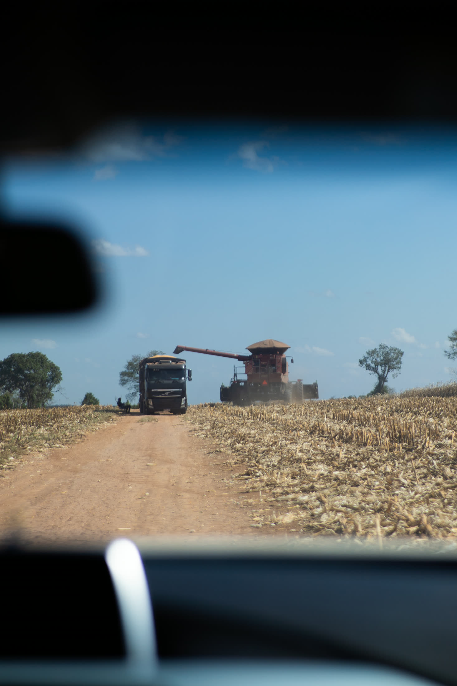
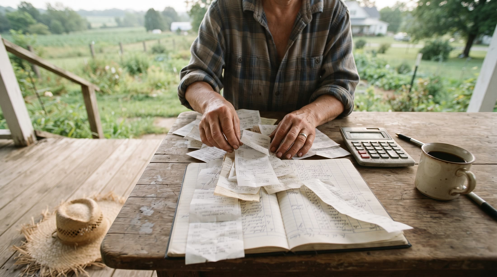

01
Renegociação de Dívida Rural
Renegociar não é fraqueza — é estratégia. O trabalho sempre é feito em conjunto com a gestão financeira, porque não adianta renegociar prazo ou juros se o produtor não tem capacidade real de pagamento depois.
- Revisão de cédulas de crédito rural (CPR) e condições abusivas
- Negociação estruturada com bancos e instituições financeiras
- Defesa em execuções judiciais e extrajudiciais
- Proteção de bens essenciais à atividade e à moradia da família
Para quem é
Produtores rurais com dívidas em atraso, execução em andamento, ou renegociações anteriores que pioraram a situação em vez de resolver.
02
Contratos Agrários
Um contrato bem construído evita disputas antes que elas comecem. A maioria dos problemas jurídicos do produtor começa em uma cláusula mal redigida ou mal entendida anos antes.
- Compra e venda de imóvel rural
- Arrendamento
- Parceria rural
- Contratos de barter (troca de insumo por produção)
Para quem é
Produtores que vão comprar, vender, arrendar ou formar parceria em imóvel rural — antes de assinar, não depois do problema aparecer.


03
Gestão Financeira do Produtor
Sem entender onde o dinheiro está, nenhuma renegociação se sustenta. O método é concreto: produtividade real (sacos por hectare frente ao custo real do hectare) e onde o dinheiro está vazando.
- Separação entre finanças pessoais (PF) e da propriedade/empresa (PJ)
- Revisão de pró-labore e retiradas
- Análise de produtividade real vs. custo real por hectare
- Reorganização do passivo com visão de médio e longo prazo
Para quem é
Produtores que sentem que "o dinheiro some" mesmo com safra boa, ou que misturam contas pessoais e da propriedade sem clareza do que sobra de fato.